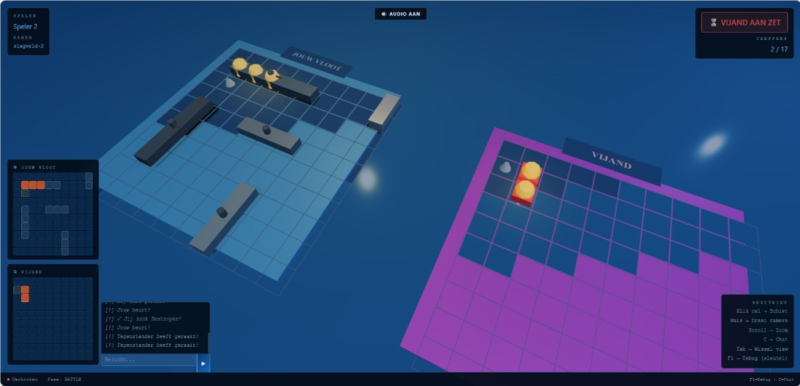
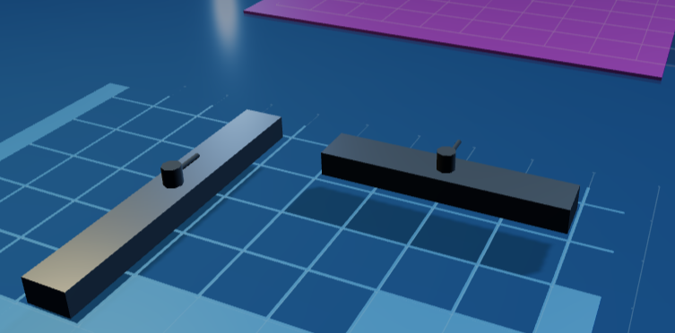

INITIALISEREN_
0%
Een strategisch beurtgebaseerd spel — gebouwd met passie, code en precisie
Scroll
Een volledig functioneel Zeeslag-spel, In 3D
Multiplayer Zeelag game in 3D
Met Three.js ontwikkelden we een interactieve 3D-versie van Zeeslag met realtime rendering, camera-controls, animaties en WebGL-technologie voor een vloeiende speelervaring in de browser.
Beleef een moderne 3D-versie van Zeeslag met interactieve gameplay, realtime effecten en tactische gevechten.
Analyseer het speelveld, voorspel vijandelijke posities en gebruik tactiek om de volledige vloot van je tegenstander uit te schakelen.
Elke aanval activeert dynamische animaties en visuele effecten waardoor het spel levendig en interactief aanvoelt.
Dankzij Three.js worden de spelborden realtime gerenderd met 3D-effecten, lichteffecten en vloeiende animaties.
Volg statistieken zoals nauwkeurigheid, aantal treffers en gewonnen rondes tijdens elke match.
De speler plaatst zijn vloot strategisch op een 10×10 raster. Elk schip heeft een vaste lengte en kan horizontaal of verticaal geplaatst worden.
Spelers wisselen beurten af. In elke beurt kies je een coördinaat op het vijandelijke bord om op te schieten. Strategie bepaalt wie wint.
Als je raakt wordt het vakje rood gemarkeerd met een explosie-. Bij een misser verschijnt een blauwe splash. Geraakte schepen worden bijgehouden.
De speler die als eerste alle schepen van de tegenstander naar beneden haalt, wint. Het eindscherm toont de winnaar met animaties en statistieken.
Semantische structuur, DOM-opbouw en spelinterface.
Animaties, responsieve layout en visuele stijl.
Spellogica, interactiviteit en DOM-manipulatie.

De twee laptops zijn verbonden via een LAN-kabel —
zonder router of wifi. Omdat er geen DHCP aanwezig is, kregen beide pc's een
statisch IP: 192.168.0.1 (server) en
192.168.0.2 (client). De game communiceert via
WebSockets op ws://192.168.0.1:3000,
zodat schoten en speldata realtime worden uitgewisseld.
We hebben de kanonnen van de 3D schepen automatisch laten draaien richting het vijandelijke veld. Bij het plaatsen controleren we of een schip horizontaal of verticaal staat en passen we de rotatie van het schip en de kanonnen realtime aan met Three.js.

We hebben met 3 personen tegelijk aan het project gewerkt via de Live Share extensie in VS Code. Hierdoor konden we realtime elkaars code aanpassen, bugs oplossen en onderdelen zoals Three.js, multiplayer en UI parallel ontwikkelen.
Dit project werd gemaakt door:
Tiemen Deschacht
Otto Hooghe
Mathias Coene